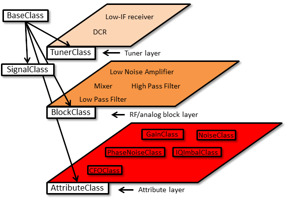

Getting started
Product Overview
The amoRF toolbox is a versatil environment for behavioral modeling and system level simulation of RF receivers. The multilayer approach delpoyed in the development of the amoRF toolbox makes it highly flexible and easy to use. The primary target costumers of this toolbox are those who develops digital compensation algorithms for RF receiver nonidealities. In these applications a low level simulation is not truly necessary, a quick evaluation of RF recever effect on the transmission is desired.
Abstaction Layers
The abstraction layers are the result of RF receiver architecture
generalization. Three layers were established in order to give high
flexibility for amoRF toolbox.
The first layer of
RF receiver modeling is the "non-ideality" layer. The nonidealities
are modeled using analytical expressions. The elements of this
layer encapsulates the properties and the effects of non-idealities in
well distingushed entities. The second layer is populated by the RF blocks (amplifers, mixers, etc.).
The elements of this layer are seen as a group of non-idealities bounded
between input and output impedances. Thus reliable behaveural models are
obtaned. The elements of the third layer are the RF receivers. The elements
of this layer are seen as a cascade of RF blocks.
Abstraction layers currently supported by the amoRF
toolbox is illustrated below.

Object Oriented Implementation
Two types of classes are used for OOP implementation: (i) layer classes to implement the abstraction layers; (ii) non-ideality classes encapsulating the properties and effects of the non-idealities. Both classes are derived from BaseClass. This parent class contains general purpose methods (read and write of properties).

Layer Classes.
A class is defined for each abstraction layer: NonIdealityClass is the class especially intended to be a template of the non-idealities. ComponentClass and ReceiverClass provide mechanism to aggregate non-ideality objects, respectivelly the obtained RF components. The "messaging" between the layers is done using signals, that are objects derived form SignalClass.
Non-idealities.
Non-idealities may be defined by the user too, but some predefined RF block nonidealities can be found in the toolbox:
Pleas inspect the User Guide to find out more about the usage of the classes.